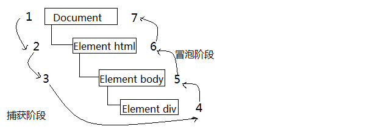

-
JavaScript事件开始学习
JavaScript与HTML之间的交互是通过事件实现的,事件,就是文档或浏览器窗口中发生的一些特定的交互瞬间,可以用侦听器(处理程序)来预定事件,以便事件发生时执行相应的代码...
- 事件流
- 事件处理程序
- 事件对象
- 事件类型
- 性能与模拟事件
事件流描述的是从页面中接收事件的顺序,而又同时存在两类事件流,一类是IE提出的事件事件冒泡流,还有一类就是事件捕获流...
IE的事件流为事件冒泡,即事件开始时由最具体的元素(文档中嵌套层次最深的那个节点)接收,然后逐渐向上传播到较为不具体的节点...
所有现代浏览器都支持事件冒泡,但具体可能有一些差别...
事件捕获的思想是不太具体的节点应该更早接收到事件,而最具体的节点应该最后接收到事件,事件捕获的用意在于在事件达到预定目标之前捕获它...
尽管DOM2级事件规范要求事件应该从document对象开始传播,但几乎所有浏览器都是从window对象开始捕获事件的,由于老版浏览器不支持事件捕获,所以很少有人使用事件捕获,所以应该首先使用事件冒泡,在特殊情况下才使用事件捕获...
DOM2级事件流规定的事件包括三个阶段: 事件捕获阶段,处于目标阶段,和事件冒泡阶段.
如单击页面上一个<div>元素,其顺序触发事件依次为:
事件处理程序(事件侦听器)是响应某个事件的函数,其名字以一个on开头...
-
HTML事件处理程序
某个元素支持的每种事件,都可以使用一个与相应事件处理程序同名的HTML特性来指定,这个特性的值应该是能够执行的JS代码..如:
<input type="button" value="click me" onclick="alert('hello world')"/>当然也可以是一个函数,这个函数在script元素定义的,也可以是外部文件中的...这样指定事件处理程序有一些独到之处,其会创建一个封装着元素属性值的函数,这个函数有一个局部变量event,也就是事件对象...如;
<input type="button" value="Click" onclick="alert(event.type)"/> //输出"click"
不过在HTML中指定事件处理程序有几个缺点,首先,存在一个时差问题,因为用户可能会在HTML元素一出现在页面上就会触发相应的事件,但当时的事件处理程序有可能尚不具备执行条件,所以很多HTML事件处理程序都会封装在一个try-catch块中,以便错误不会浮出水面...
还有一个缺点就是,这样扩展事件处理程序的作用域链在不同的浏览器中会导致不同结果,不同的JS引擎的标识符解析规则略有差异,很可能会在访问非限定对象成员时出错...
最后,通过HTML指定的事件处理程序,HTML代码与JS代码紧密耦合,如果要替换事件处理程序,就要改动两个地方: HTML代码和JS代码...
-
DOM0级事件处理程序
DOM0级事件处理程序,就是将一个函数赋值给一个事件处理程序属性;要使用JS指定事件处理程序,首先必须取得一个要操作的对象引用...
每个元素都有自己的事件处理程序属性,这些属性通常全部小写,如;
var btn =doucment.getElementById('mybtn');
btn.onclick = function(){ alert("click!");} //使用DOM0级方法指定的事件处理程序被认为是元素的方法,因此,这时候的事件处理程序是在元素的作用域内运行,程序的this引用当前元素...
也可以删除通过DOM0级方法指定的事件处理程序,只要事件处理程序属性的值设为null就行...
-
DOM2级事件处理程序
DOM2级事件定义了两个方法,用于处理指定和删除处理程序的操作,addEventListener()和removeEventListener().所有的DOM节点都包含这两个方法,并且它们都接受3个参数: 要处理的事件名,作为事件处程序的函数和一个布尔值.最后这个布尔值参数如果为true,表示在捕获阶段调用事件处理程序,如果是false,表示在冒泡阶段调用事件处理程序,如:
var btn = document.getElementById('btn');
btn.addEventListener("click",function(){ alert("hello");},false) ;通过addEventListener()添加的事件处理程序只能使用removeEventListener()来移除,移除时传入的参数与添加处理程序时使用的参数相同,这意味着通过addEventListener()添加的匿名函数将无法移除,如上面为btn元素添加的事件,使用下面的代码无法移除:
btn.removeEventListener("click",function(){ alert("hello");},false);//没有用DOM2级方法添加的事件处理程序也是在其依附的元素的作用域中运行,使用DOM2级方法添加事件处理程序的主要好处是可以添加多个事件处理程序...
-
IE事件处理程序
IE实现了与DOM中类似的两个方法: attachEvent() 和 detachEvent();折两个方法接收相同的两个参数,事件处理程序名称,事件处理程序函数,事件会被添加到冒泡阶段...如:
btn.attachEvent("onclick",function(){ alert("hello");});注意了吧,第一个参数是一个事件处理程序名称,而不是DOM2级中的事件名,所以加了on,使用attachEvent()方法的情况下,事件处理程序会在全局作用域中运行,所以this 等于 window
为了实现跨浏览器的事件处理程序,我们可以使用下面的代码来实现:
var EventUtil = { addHander : function(element,type,hander){ if(element.addEventListener){ element.addEventListener(type,hander,false); }else id(element.attchEvent){ element.atachEvent("on"+type,hander); }else{ element["on"+type] =hander; } }, removeHander : function(element,type,hander){ if(element.removeEventListener){ element.removeEventListener(type,hander,false); }else if(element.detachEvent){ element.detachEvent("on"+type,hander); }else{ element["on"+type] = null; } } };在触发DOM上的某个事件时,会产生一个事件对象event,这个对象包含着所有与事件有关的信息;包括导致事件的元素,事件的类型,以及其他与特定事件相关的信息...
DOM中的事件对象
兼容DOM的浏览器会将一个event对象传入到事件处理程序中;无论指定事件处理程序时使用什么方法,都会传入event对象...
下面就给出了所有事件都会有的属性和方法
属性/方法 类型 读/写 说明 bubbles Boolean 只读 表明事件是否冒泡 cacelable Boolean 只读 表明是否可以取消事件的默认行为 currentTarget Element 只读 其事件处理程序当前正在处理事件的那个元素 defaultPrevented Boolean 只读 为true表示已经调用了preventDefault() detail Integer 只读 与事件相关的细节信息 eventPhase Integer 只读 调用事件处理程序的阶段:1表示捕获阶段,2表示"处于目标",3表示冒泡阶段 preventDefault() Function 只读 取消事件的默认行为,如果cancelable是true,则可以使用这个方法 stopPropagation() Function 只读 取消事件的进一步捕获或冒泡,如果bubbles为true,则可以使用这个方法 target Element 只读 事件的目标 type String 只读 被触发的事件类型 view AbstractView 只读 与事件关联的抽象视图,等同于发生事件的window对象 在事件处理程序内部,对象this始终等于currentTarget的值,而target则只包含事件的实际目标
IE中的事件对象
与访问DOM中的event对象不同,要访问IE中的event对象有几种不同的方式,取决于指定事件处理程序的方法.在使用DOM0级方法添加事件处理程序时,event对象作为window对象的一个属性存在...而如果使用attachEvent()添加的,那么就会有一个event对象作为参数被传入到事件处理程序函数中...
IE中的event对象也有与创建它事件相关的属性和方法,如下:
属性/方法 类型 读/写 说明 cancelBubble Boolean 读/写 默认为false,但将其设置为true就可以取消事件冒泡 returnValue Boolean 读/写 默认值为true,但将其设置为false就可以取消事件的默认行为 srcElement Element 只读 事件的目标 type String 只读 被触发的事件的类型 跨浏览器的事件对象,我们可以对上面提到的EventUtil对象加以增强,如下:
var EventUtil = { addHander : function(element,type,hander){ //略,前面已经说了 }, getEvent : function(event){ return event ? event : window.event; }, getTarget : function(event){ return event.target || event.srcElement; }, preventDefault : function(event){ if(event.preventDefault){ event.preventDefault(); }else{ event.returnValue = false; } }, removeHander : function(element,type,hander){ //略 }, stopPropagation : function(event){ if(event.stopPropagation){ event.stopPropagation(); } else{ event.cancelBubble = true; } } };在浏览器中可能发生的事件有很多类型,而DOM3级事件规定了一下几类事件
-
UI事件,当用户与页面上的元素交互时触发
UI事件指的是不一定与用户操作有关的事件,下面是一些常用的UI事件类型:
-
load:当页面完全加载后再window上面触发,当所有框架都加载完在框架集上面触发,当图像加载完毕时在<img>上面触发,或者当嵌入的内容加载完毕时在<object>元素上触发...
<script>元素也会触发load事件,以便开发人员确定动态加载JS文件是否加载完毕...
-
unload:当页面完全卸载后在window触发,当所有框架都卸载后在框架集上触发...
-
abort:当用户停止下载过程时,如果嵌入的内容没有加载完,则在<object>上面触发...
-
error:当发生JS错误时在window上面触发,当无法加载图片时在<img>上面触发,当无法加载嵌入的内容时在<object>元素上面触发...
-
select:当用户选择文本框(<input>或<textarea>)中的一或多个字符时触发...
-
resize:当窗口或框架的大小变化时在window或框架上触发...
-
scroll:当用户滚动带滚动条的元素中的内容时,在该元素上面触发...
-
-
焦点事件,当元素获得或失去焦点时触发
-
blur:在元素失去焦点时触发,并且这个事件不会冒泡,所有浏览器都支持它...
-
focus:在元素获得焦点时触发,这个事件不会冒泡,所有浏览器都支持它...
-
focusin:在元素获得焦点时触发,与focus等价,但是可以冒泡...
-
focusout:元素失去焦点时触发,与blur等价,但可以冒泡...
-
-
鼠标事件,当用户通过鼠标在页面上执行操作时触发
-
click:在用户单击主鼠标按钮时(一般左边按钮),或者按下回车键时触发
-
dbclick:在用户双击主鼠标按钮时触发...
-
mousedown:在用户按下了任意鼠标按钮时触发,不能通过键盘来触发
-
mouseenter:在鼠标光标从元素外部首次移动到元素范围之内触发,这个事件不冒泡,并且在光标移动到后代元素不会触发...
-
mouseleave:在位于元素上方的鼠标光标移动到元素范围之外时触发,这个事件不冒泡,并且在光标移动到后代元素不会触发...
-
mousemove:当鼠标光标在元素内部移动时重复触发,不能通过键盘触发此事件...
-
mouseout:在鼠标指针位于一个元素上方,然后用户将其移入另一个(可能位于前一个元素外部,也可能是这个元素的子元素)元素时触发,
-
mouseover:在鼠标指针位于一个元素外部,然后用户将其首次移入到另一个元素边界之内时触发
-
mouseup:在用户释放鼠标按钮时触发...
-
-
滚轮事件,当使用鼠标滚轮(或类似设备)时触发
-
文本事件,当在文档中输入文本时触发
-
键盘事件,当用户通过键盘在页面上执行操作时触发
-
合成事件,当为IME(输入法编辑器)输入字符时触发
-
变动事件,当底层DOM结构发生变化时触发
在JS中,添加到页面上的事件处理程序数量将直接关系到页面的整体运行性能;首先,每个函数都是对象,都会占用内存:内存中对象越多,性能就越差,其次必须事先指定所有事件处理程序而导致的DOM访问次数,会延迟整个页面的交互就绪时间,所有提升性能是很有必要的...
事件委托,对事件处理程序过多问题的解决方案就是事件委托,事件委托利用事件冒泡,只指定一个事件处理程序,就可以管理某一类型的所有事件...
最适合事件委托的事件包括: click,mousedown,mouseup,keyup,keydown,keypress,虽然mouseover,mouseout事件也冒泡,但要适当处理它们并不容易,而且经常需要计算元素的位置...
移除事件处理程序,每当将事件处理程序指定给元素时,运行中的浏览器代码与支持页面交互的JS代码之间就会建立一个连接,这种连接越多,页面执行起来就越慢.内存中留有那些过时不用的"空事件处理程序",也是造成Web应用程序内存与性能问题的主要原因,所以在不需要的时候移除事件处理程序,也是解决这个问题的一种方案...
在下面的两种情况,可能会造成上述问题,第一种情况是从文档中移除带有事件处理程序的元素时,这可能是纯粹的DOM操作,如在使用innerHTML替换页面中某一部分时,如果带有事件处理程序的元素被innerHTML删除了,那么原来添加到元素中的事件处理程序极有可能无法被当作垃圾回收...
还有一种情况是,卸载页面的时候,如果在页面被卸载之前没有清净事件处理程序,那么它们就会滞留在内存中,内存中滞留的对象数目就会增加,因为事件处理程序占用的内存并没有释放...
一般来说,最好的做法是在页面卸载之前,先通过onunload事件处理程序移除所有事件处理程序...
下面介绍的是模拟事件
-
DOM中的事件模拟,可以在document对象上使用createEvent()方法创建event对象,这个方法接收一个参数,即要表示要创建的事件类型字符串;在DOM2级中,所有这些字符串都使用英文复数形式,在DOM3级中都变成了单数,而这个字符串可以是下面的几个字符串之一...
-
UIevents:一般化的UI事件,鼠标事件和键盘事件都继承自UI事件,DOM3级中为UIevent
-
MouseEvents:一般化的鼠标事件,DOM级为MouseEvent
-
MutationEvents:一般化的DOM变动事件,DOM3级为MutationEvent
-
HTMLEvents:一般化的DOM变动事件,没有对应的DOM3级事件
keyboardEvent:键盘事件,DOM3级规定的...
CustomEvent:自定义事件
创建完event对象后,还需要使用与事件有关的信息对其进行初始化,每种类型的event对象都有一个特殊的方法,为它传入适当的数据就可以初始化该event对象,不同类型的这个方法名字都不相同,具体要取决于createEvent()中使用的参数.
模拟事件最后一步就是触发事件,这一步需要使用dispatchEvent()方法,其接收一个参数,即表示要触发事件的event对象...
模拟鼠标事件,createEvent()传入字符串"MouseEvents",返回的对象有一个名为initMouseEvent()方法,其接收15个参数(说起来还真有点小吓人),分别与鼠标事件中的每个典型的属性一一对应,如下:
参数 表示含义 参数 表示含义 type(字符串) 表示要触发的事件类型 bubbles(布尔值) 表示事件是否应该冒泡,一般为true cancelable(布尔值) 表示事件是否可以取消,一般为true view(AbstractView) 与事件关联的视图,为document.defaultView detail(整数) 与事件有关的详细信息,通常为0 screenX(整数) 事件相对于屏幕的X坐标 screenY(整数) 事件相对于屏幕的Y坐标 clientX(整数) 事件相对于视口的X坐标 clientY(整数) 事件相对于视口的Y坐标 ctrlKey(布尔值) 表示是否按下了ctrl 键,默认false altKey(布尔值) 表示是否按下了alt 键,默认false shiftKey(布尔值) 表示是否按下了shift 键,默认false metaKey(布尔值) 表示是否按下了Meta 键,默认false button(整数) 表示按下了哪一个鼠标键,默认0 relatedTarget(对象) 表示与事件有关的对象 如下面的代码,来模拟对按钮的单击事件:
var btn = document.getElementById('myBtn'); var event = document.createEvent("MouseEvents"); event,initMouseEvent("click",true,true,document.defaultView,0,0,0,0,0,false,false,false,fasle,0,null); btn.dispatchEvent(event);模拟键盘事件,DOM2级没有就键盘事件作规定,所以模拟键盘事件并没有现成的思路可循.
模拟变动事件,HTML事件
自定义DOM事件,创建自定义事件,可以调用createEvent("CustomEvent"),返回的对象有一个名为initCustomEvent()的方法,接收四个参数: type(触发的类型),bubbles(事件是否可以冒泡),cancelable(事件是否可以取消),detail(任意值)
-
-
IE中的模拟事件,调用document.createEventObject()方法可以创建event对象,其不需要参数.返回一个event对象,得为这个对象添加所有必要的信息,与前面传入参数一样,最后在目标上调用fireEvent()方法,其接收两个参数: 事件处理程序名称,event对象...
-
JavaScript表单开始学习
- 基础知识
- 文本框脚本
- 选择框脚本
- 富文本编辑
在HTML中,表单是由<form>元素来表示的,而在JS中表单对应的则是HTMLFormElement类型,其继承自HTMLElement,但有一些自己的属性和方法:
-
acceptCharset:服务器能够处理的字符集,等价于HTML中的accept-charset特性
-
action:接受请求的URL,等价于HTML中的action
-
elements:表单中所有控件的集合(HTMLCollection)
-
enctype:请求的编码类型,等价于HTML中的enctype
-
length表单中控件的数量
-
method要发送的HTTP请求类型,通常为"get","post"
-
name:表单的名称
-
reset():将所有表单域重置为默认值
-
submit():提交表单
-
target:用于发送请求和接受响应窗口名称
提交表单
用户单击提交按钮或图像按钮时,就会提交表单.使用<input>或<button>都可以定义提交按钮.只要将其type特性的值设置为submit即可,图像按钮则将<input>的type特性设置为image:
<input type="submit" value="submit form"> <!--通用提交按钮--> <button type="submit">submit form</button> <!--自定义提交按钮--> <input type="image" src="image.png"><!--图像按钮-->只要表单上存在上面的任何一种按钮,在表单控件拥有焦点的情况下,按enter 键就可以提交,但是textarea不行...
以这种方式提交表单时,浏览器会在将请求发送给服务器之前触发submit事件,而通过submit()方法形式提交表单时不会触发submit事件...
当遇到重复提交表单情况时,如果不加以处理,可能出现一些不可预料的情况,为了解决这个问题,可以在第一次提交表单后就禁用提交按钮,或者利用onsubmit事件处理程序取消后续的表单提交操作...
重置表单
在用户单击重置按钮时,表单会被重置,使用type特性为reset的<input>或者<button>都可以创建重置按钮.
重置后的表单字段都会恢复到页面刚加载完毕时的初始值.调用reset()方法会像单击重置按钮一样触发reset事件...
表单字段
每个表单都有一个elements属性,其是一个有序列表,包含着表单中的所有字段,例如:<input>,<textarea>,<fieldset>;每个表单字段在elements集合中的顺序与出现在标记中的顺序一样.可以按照位置和name属性访问它们...
var form = document.getElementById('form'); var field = form.elements[0];//取得表单中的第一个字段 var field2 = form.elements["textbox"];//取得name为textbox的字段如果有多个表单控件都在使用一个name(如:单选),那么就会返回以该name命名的一个NodeList,不过如果访问elements[0]则只会返回第一个元素...
<form method="post" id="myForm"> <ul> <li><input type="radio" name="color" value="red">red</input></li> <li><input type="radio" name="color" value="green">green</input></li> <li><input type="radio" name="color" value="blue">blue</input></li> </ul> </form> <script> var form = document.getElementById('myForm'); var colorFields = form.elements['color']; var len = colorFields.length;//3 alert(colorFields[0] ===form.elements[0]);//true </script>共用的表单字段属性
除了<fieldset>元素之外,所有表单元素都有一组相同的属性:
-
disabled:布尔值,表示当前字段是否被禁用
-
form:指向当前字段所属表单的指针,只读
-
name:当前字段的名称
-
readyOnly:布尔值,表示当前字段是否只读
-
tableIndex:表示当前字段的切换(tab)序号
-
type:当前字段的类型,如:"checkbox","radio"
-
value:当前字段将被提交给服务器的值,对文件字段来说,这个属性是只读的.
共有表单字段方法
每个表单字段都有两个方法: focus(),和blur(),其中focus()方法用于将浏览器的焦点设置到表单字段,即激活表单字段,使其可以响应键盘事件.但要注意的是如果表单类型为hidden,那么会导致错误,CSS的display和visibility属性隐藏了该字段,同样导致错误.而blur()方法作用是从元素中移走焦点,在调用这个方法时,并不会把焦点转移到某个特定的元素上,仅仅是将焦点从这个元素上移除...
共有的表单字段事件
除了支持鼠标,键盘,HTML事件之外,还支持以下事件:
-
blur:当前字段失去焦点时触发
-
change:对于input,textarea元素,在它们失去焦点且value值改变时触发,对于select元素,在其选项改变时触发
-
focus:当前字段获得焦点时触发
在HTML中，有两种方法来表现文本：一种是使用<input>的单行文本，另一种就是使用<textarea>多行文本...
- 单行文本
要表现文本框，必须将<input>元素的type特性设置为"text",而通过设置size特性，可以指定文本框能够显示的字符数；通过设置"value"特性，可以设置文本框的初始值；"maxlength"可以指定文本框可以接受的最大字符数...
- 多行文本
<textarea>元素则始终会呈现多行文本框，要指定文本框的大小，可以使用rows特性(指定的是文本框的字符行数),以及cols特性(指定的是文本框的字符列数)，如：
<textarea name="test" id="test" cols="30" rows="10">hello</textarea>
选择文本
上述的两种方法都支持select()方法，这个方法用于选择文本框中的所有文本。在调用此方法后，大多数浏览器(opera好像不行)都会将焦点设置到文本框中，其不接收参数，无返回值...
- 选择(select)事件
其是与select()方法对应的,在选择文本框文本时，就会触发select事件;当然在调用select()方法时也会触发select事件...
- 取得选择的文本
HTML5通过一些扩展方案解决了顺利取得选择的文本内容，该规范采取的是添加两个属性:selectionStart,selectionEnd,这两个属性保存着是基于0的数值，表示所选择文本的范围，所以为了获取用户在文本框中选择的文本.而IE8之前的版本是使用的document.selection对象来获取文本内容，但是必须首先创一个范围后才能提取文本；可以使用如下代码：
function getSelectedText(textbox){ if(typeof(textbox.selectionStart == "number")){ return textbox.value.substring(textbox.selectionStart,textbox.selectionEnd); }else{ return document.selection。createRange().text; } } - 选择部分文本
除了select()方法外，所有文本框都有一个setSelectionRange()方法，其接收两个方法：要选择的第一个字符的索引，以及要选择的最后一个字符之后的字符的索引...如：
textbox.value = "Hello world"; textbox.setSelectionRange(0,textbox.value.length);// "Hello world" textbox.setSelectionRange(0,3); //"Hel"要看到选择的文本，必须在调用setSelectionRange()之前或之后立即将焦点设置到文本框。
-
JavaScript面向对象程序设计开始学习
在ECMA-262中，把对象定义为：“无序属性的集合，其属性可以包含基本值，对象和函数...”
- 理解对象
- 创建对象
- 继承
23 -
JavaScript浏览器检测开始学习
-
JavaScript错误处理与调试开始学习
-
离线应用与客户端存储开始学习
所谓离线Web应用，就是在设备不能上网的情况下仍然可以运行的应用，开发离线Web应用需要几个步骤:
- 确保应用知道设备是否能上网，以便下一步执行正确的操作...
- 应用必须能访问一定的资源(图像，CSS,JS...),只有这样才能正确工作...
- 必须有一块本地空间用于保存数据...
离线检测
开发离线应用的第一步就是要知道设备在线还是离线，为此HTML5定义了一个
navigator.onLine属性，该属性为true表示设备能上网，为false表示不能上网...除了上面提到的这个属性外，HTML5还定义了两个事件：
- online:当网络从离线变为在线时触发...
- offline:当网络从在线变成离线时触发...
应用缓存
HTML5的应用缓存(简称为appcache)是专门为开发离线Web应用设计的，其从浏览器的缓存中分出来一块缓存区，要想在这片缓存区中保存数据，可以使用一个描述文件(manifest file)列出要下载和缓存的文件，如下：
CACHE MANIFEST #Comment file.js file.css要将描述文件与页面关联起来，可以在<html>中的manifest属性中指定这个文件的路径，如：
<html manifest="/offline.manifest">以上代码告诉页面，/offline.manifest中包含着描述文件，这个文件的MIME类型必须为text/cache-manifest (描述文件的扩展名以前推荐为manifest，但现在推荐为appcache)
虽然应用缓存的意图是确保离线时资源可用，但也有相应的JS API可以来获取其在干什么，这个API的核心是applicationCache对象，该对象有一个常量属性status，表示应用缓存的当前状态...
- 0 ： 无缓存，即没有与页面相关的应用缓存
- 1 ： 闲置，即应用缓存未得到更新
- 2 ： 检查中，即正在下载描述文件并检查更新
- 3 ： 下载中，即应用缓存正在下载描述文件中指定的资源
- 4 ： 更新完成，即应用缓存已经更新了资源，而且所有资源都已经下载完毕，可以通过swapCache()来使用了
- 5 ： 废弃，即应用缓存的描述文件已经不存在了...
数据存储
- Cookie
- Web存储机制
- IndexedDB
cookie 以name为名称，value为值，名称和值都要在传送时必须是URL编码的，通过为每个请求添加Cookie HTTP 头将信息发回给服务器，如下：
GET .index.html HTTP/1.1 Cookie:name=value Other-header:other-header-value大多浏览器都对cookie有许多的限制，对于其尺寸来说，大约为4096B...
cookie的构成
- 名称：一个唯一确定cookie的名称，cookie名称是不区分大小写的(所以myCookie与MyCookie是同一个cookie)，但最好把其看作区分大小写,cookie的名称必须经过URL编码.
- 值：存储在cookie中的字符串值，值必须被URL编码
- 域： cookie对于那个域是有效的，所有向该域发送请求中都包含这个cookie信息，可以包含子域...
- 路径：对于域中的那个路径，应该向服务器发送cookie
- 失效时间：表示cookie何时应该被删除默认情况下，浏览器会话结束会删除所有的cookie，但可以自己设置时间，这个值是GMT格式日期...如果设置失效的时间为一个以前的时间，则cookie会立刻删除...
- 安全标记：指定后，cookie只有在使用SSL连接时才发送到服务器.
如下面发送的一段Cookie：
HTTP/1.1 200 OK Content-type:text/html Set-Cookie:name=value;domain=.xiazanyi.com;path=/ ;secure Other-header: other-header-value在上面的代码中，创建了一个对于所有的xiazanyi.com的子域和域名下（由path参数指定）所有页面都有效的cookie。由于设置了secure，所有只能通过SSL连接才能传输...
尤其要注意，域，路径，失效时间和secure标记都是服务器给浏览器的提示，以指定何时应该发送cookie，这些参数不会作为发送到服务器的cookie信息的一部分，只有名值对才会被发送...
在JS中处理cookie，使用BOM的document.cookie属性，其返回的是当前页面可用的所有cookie的字符串，一系列由分号名值对...
所有名字和值经过URL编码，所以必须使用decodeURIComponent()来解码(encodeURIComponent()设置编码)
我们可以使用下面这个函数来包装基本cookie的：读取，写入，删除：
var CookieUtil ={ get : function(name){ var cookieName = encodeURIComponent(name) + "=", cookieStart = document.cookie.indexOf(cookieName), cookieValue =null; if(cookieStart >-1){ var cookieEnd = document.cookie.indexOf(";",cookieStart); if(cookieEnd = -1){ cookieEnd = document.cookie.length; } cookieValue = decodeURIComponent(document.cookie.subString(cookieStart+cookieName.length,cookieEnd)); } return cookieValue; }, set : function(name,value,expires,path,domain,secure){ var cookieText = encodeURIComponent(name) + "=" + encodeURIComponent(value) ; if(expires instanceof Date){ cookieText += "; expires="+ expires.toGMTString(); } if(path){ cookieText +="; path="+ path; } if(domain){ cookieText +="; domain=" + domain; } if(secure){ cookieText +="; secure"; } document.cookie = cookieText; }, unset : function(name,path,domain,secure){ this.set(name,"",new Date(0),path,domain,secure); } };而在很多的时候，由于存在coookie数的限制，所以使用cookie值来存储多个名称值对儿，也就是子cookie，如下面的格式：
name=name1=value1&name2=value2&name3=value3&name4=value4为了更好的操作子cookie，当然上面提到的基本的cookie操作方法是不能满足的，因此必须有一套新的设置，获取，删除方法：点击查看
var SubCookieUtil = { get: function(name,subName){ //获取单个子cookie var subCookies = this.getAll(name); if(subCookies){ return subCookies[subName]; }else{ return null; } }, getAll : function(name){ //获取所有子cookie并将它们放入到一个对象中返回 var cookieName = encodeURIComponent(name)+"=", cookieStart = document.cookie.indexOf(cookieName), cookieValue = null, cookieEnd, subCookies, i, parts, result = {}; if(cookieStart >-1){ cookieEnd = document.cookie.indexOf(";",cookieStart); if(cookieEnd = -1){ cookieEnd = document.cookie.length; } cookieValue = document.cookie.subString(cookieStart+cookieName.length,cookieEnd); if(cookieValue.length >0){ subCookies = cookValue.spilt("&"); for(i=0,len=subCookies.length;i <len;i++){ parts =subCookies[i].spilt("="); result[decodeURIComponent(parts[0])] = decodeURIComponent(parts[1]); } retuen result; } } return null; }, set : function(name,subName,value,expires,path,domain,secure){ var subCookies = this.getAll(name) || {}; subCookies[subName] =value; this.setAll(name,subCookies,expires,path,domain.secure); }, setAll : function(name,subCookies,expires,path,domain,secure){ var cookieText = encodeURLComponent(name) + "=", subcookieParts = new Array(), subName; for(subName in subCookies){ if(subName.length >0 && subCookies.hasOwnProperty(subName)){ subcookieParts.push(encodeURIComponent(subName)+ "="+ encodeURIComponent(subCookies[subName])); } } if(subcookieParts.length >0){ cookieText +=subcookieParts.join("&"); if(expires instanceof Date){ cookieText += "; expires="+ expires.toGMTString(); } if(path){ cookieText += "; path=" + path; } if(domain){ cookieText +="; domain="+ domain; } if(secure){ cookieText += "; secure"; } }else{ cookieText += "; expires="+ (new Date(0)).toGMTString(); } document.cookie = cookieText; }, unset : function(name,subName,path,domain,secure){ var subCookies =this.getAll(name); if(subCookies){ delete subCookies[subName]; this.setAll(name,subCookies,null,path,domain,secure); } }, unsetAll : function(name,path,domain,secure){ this.setAll(name,null,new Date(0),path,domain,secure); } };由于所有的cookie都会由浏览器作为请求头发送，所以在cookie中存储大量信息会影响到特定域的请求性能，cookie信息越大，完成对服务器的请求时间也越长...
一定不要在cookie中存储重要和敏感的数据，cookie数据并非存储在一个安全的环境中，其中包含任何数据都可以被他人访问...
Web Storage 的目的是克服由cookie带来的一些限制，当数据需要被严格控制在客户端时，无须持续的将数据发回服务器，Web Storage 的两个目标是：
- 提供一种在cookie之外存储会话数据的途径
- 提供一种存储大量可以跨会话存在的数据机制
Storage类型
Storage类型提供最大的存储空间来存储名值对儿，其有如下的方法：
- clear():删除所有值
- getItem():根据指定的名字name获取对应的值
- key(index):获取index位置处值的名字
- removeItem(name):删除由name指定的名值对儿
- setItem(name,value):为指定的name设置一个对应的值
1111